Active Directory Basics
The main advantages of having a configured Windows domain are:
▪ Centralised identity management: All users across the network can be configured from Active Directory with minimum effort.
▪ Managing security policies: You can configure security policies directly from Active Directory and apply them to users and computers across the network as needed.
Active Directory Domain Service (AD DS)
The core of any Windows Domain is the Active Directory Domain Service (AD DS). This service acts as a catalogue that holds the information of all of the "objects" that exist on your network. Amongst the many objects supported by AD, we have users, groups, machines, printers, shares and many others. Let's look at some of them:
Users
Users are one of the most common object types in Active Directory. Users are one of the objects known as security principals, meaning that they can be authenticated by the domain and can be assigned privileges over resources like files or printers. You could say that a security principal is an object that can act upon resources in the network.
Users can be used to represent two types of entities:
▪ People: users will generally represent persons in your organisation that need to access the network, like employees.
▪ Services: you can also define users to be used by services like IIS or MSSQL. Every single service requires a user to run, but service users are different from regular users as they will only have the privileges needed to run their specific service.
Machines
Machines are another type of object within Active Directory; for every computer that joins the Active Directory domain, a machine object will be created. Machines are also considered "security principals" and are assigned an account just as any regular user. This account has somewhat limited rights within the domain itself.
The machine accounts themselves are local administrators on the assigned computer, they are generally not supposed to be accessed by anyone except the computer itself, but as with any other account, if you have the password, you can use it to log in.
Note: Machine Account passwords are automatically rotated out and are generally comprised of 120 random characters.
Identifying machine accounts is relatively easy. They follow a specific naming scheme. The machine account name is the computer's name followed by a dollar sign. For example, a machine named DC01 will have a machine account called DC01$
Security Groups
If you are familiar with Windows, you probably know that you can define user groups to assign access rights to files or other resources to entire groups instead of single users. This allows for better manageability as you can add users to an existing group, and they will automatically inherit all of the group's privileges. Security groups are also considered security principals and, therefore, can have privileges over resources on the network.
Groups can have both users and machines as members. If needed, groups can include other groups as well.
Several groups are created by default in a domain that can be used to grant specific privileges to users. As an example, here are some of the most important groups in a domain:
| Security Group | Description |
|---|---|
| Domain Admins | Users of this group have administrative privileges over the entire domain. By default, they can administer any computer on the domain, including the DCs. |
| Server Operators | Users in this group can administer Domain Controllers. They cannot change any administrative group memberships. |
| Backup Operators | Users in this group are allowed to access any file, ignoring their permissions. They are used to perform backups of data on computers. |
| Account Operators | Users in this group can create or modify other accounts in the domain. |
| Domain Users | Includes all existing user accounts in the domain. |
| Domain Computers | Includes all existing computers in the domain. |
| Domain Controllers | Includes all existing DCs on the domain. |
List of All Default Groups in a Domain: https://docs.microsoft.com/en-us/windows/security/identity-protection/access-control/active-directory-security-groups
Active Directory Users and Computers
To configure users, groups or machines in Active Directory, we need to log in to the Domain Controller and run "Active Directory Users and Computers" from the start menu:
This will open up a window where you can see the hierarchy of users, computers and groups that exist in the domain. These objects are organised in Organizational Units (OUs) which are container objects that allow you to classify users and machines. OUs are mainly used to define sets of users with similar policing requirements. The people in the Sales department of your organisation are likely to have a different set of policies applied than the people in IT, for example. Keep in mind that a user can only be a part of a single OU at a time.
Checking our machine, we can see that there is already an OU called THM with four child OUs for the IT, Management, Marketing and Sales departments. It is very typical to see the OUs mimic the business' structure, as it allows for efficiently deploying baseline policies that apply to entire departments. Remember that while this would be the expected model most of the time, you can define OUs arbitrarily. Feel free to right-click the THM OU and create a new OU under it called Students just for the fun of it.
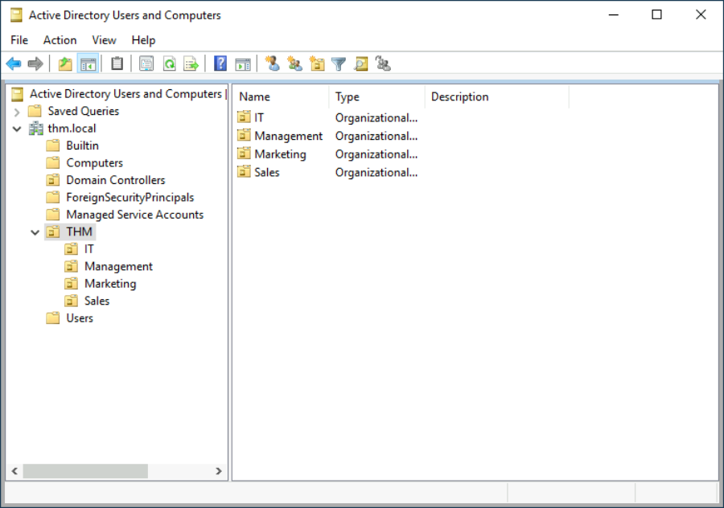
If you open any OUs, you can see the users they contain and perform simple tasks like creating, deleting or modifying them as needed. You can also reset passwords if needed (pretty useful for the helpdesk):
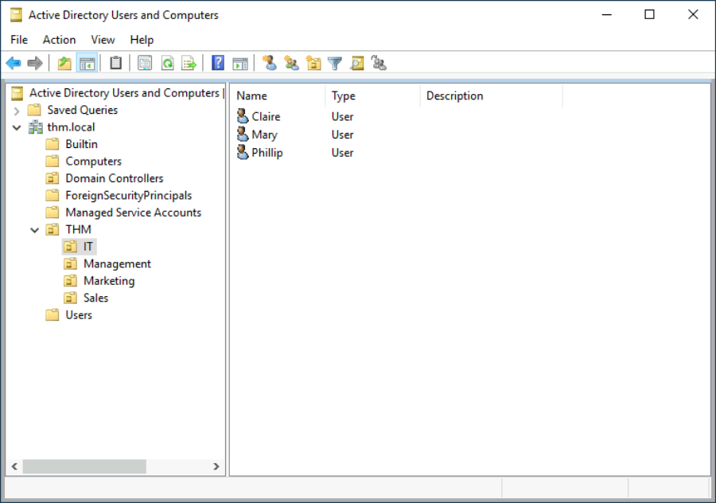
You probably noticed already that there are other default containers apart from the THM OU. These containers are created by Windows automatically and contain the following:
▪ Builtin: Contains default groups available to any Windows host.
▪ Computers: Any machine joining the network will be put here by default. You can move them if needed.
▪ Domain Controllers: Default OU that contains the DCs in your network.
▪ Users: Default users and groups that apply to a domain-wide context.
▪ Managed Service Accounts: Holds accounts used by services in your Windows domain.
Security Groups vs OUs
You are probably wondering why we have both groups and OUs. While both are used to classify users and computers, their purposes are entirely different:
▪ OUs are handy for applying policies to users and computers, which include specific configurations that pertain to sets of users depending on their particular role in the enterprise. Remember, a user can only be a member of a single OU at a time, as it wouldn't make sense to try to apply two different sets of policies to a single user.
▪ Security Groups, on the other hand, are used to grant permissions over resources. For example, you will use groups if you want to allow some users to access a shared folder or network printer. A user can be a part of many groups, which is needed to grant access to multiple resources.
Managing Users in AD:
Scenario Based: THM
Your first task as the new domain administrator is to check the existing AD OUs and users, as some recent changes have happened to the business. You have been given the following organisational chart and are expected to make changes to the AD to match it:
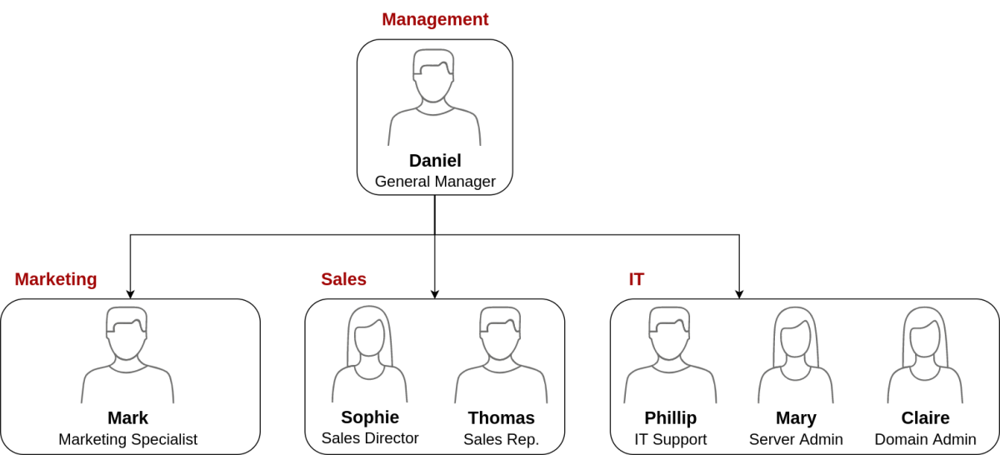
Deleting extra OUs and users
The first thing you should notice is that there is an additional department OU in your current AD configuration that doesn't appear in the chart. We've been told it was closed due to budget cuts and should be removed from the domain. If you try to right-click and delete the OU, you will get the following error:
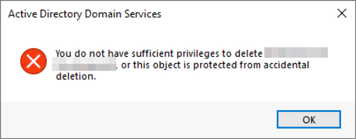
By default, OUs are protected against accidental deletion. To delete the OU, we need to enable the Advanced Features in the View menu:
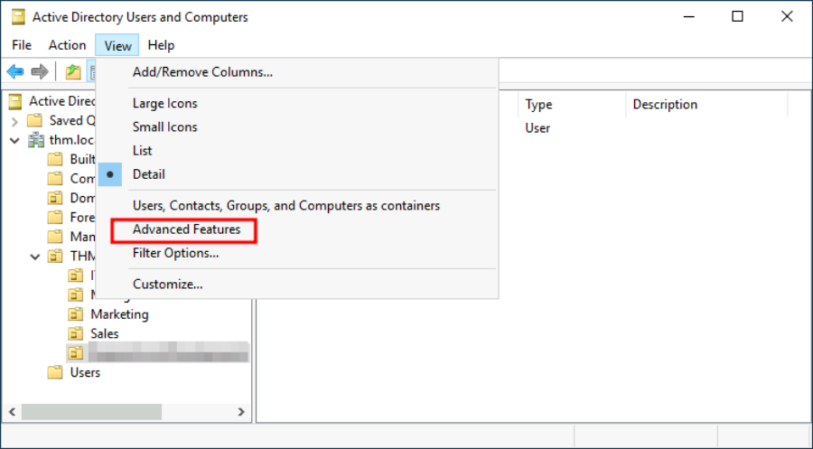
This will show you some additional containers and enable you to disable the accidental deletion protection. To do so, right-click the OU and go to Properties. You will find a checkbox in the Object tab to disable the protection:
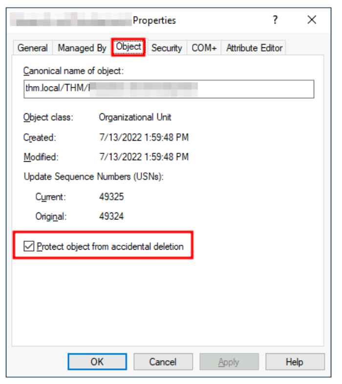
Delegation:
One of the nice things you can do in AD is to give specific users some control over some OUs. This process is known as delegation and allows you to grant users specific privileges to perform advanced tasks on OUs without needing a Domain Administrator to step in.
One of the most common use cases for this is granting IT support the privileges to reset other low-privilege users' passwords. According to our organisational chart, Phillip is in charge of IT support, so we'd probably want to delegate the control of resetting passwords over the Sales, Marketing and Management OUs to him.
For this example, we will delegate control over the Sales OU to Phillip. To delegate control over an OU, you can right-click it and select Delegate Control:
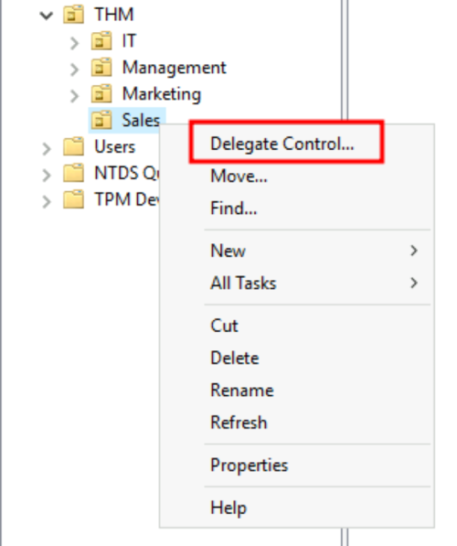
This should open a new window where you will first be asked for the users to whom you want to delegate control:
Note: To avoid mistyping the user's name, write "phillip" and click the Check Names button. Windows will autocomplete the user for you.
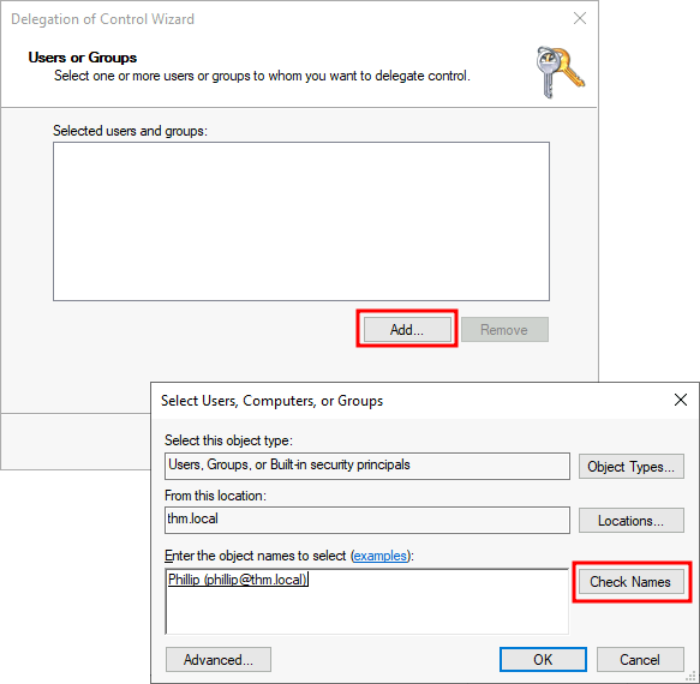
Click OK, and on the next step, select the following option:
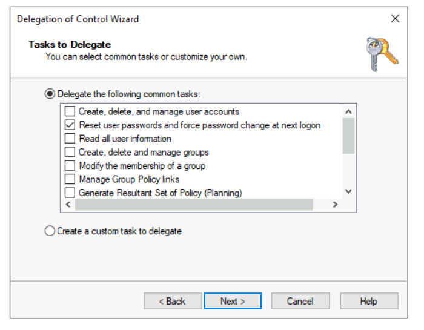
Click next a couple of times, and now Phillip should be able to reset passwords for any user in the sales department. While you'd probably want to repeat these steps to delegate the password resets of the Marketing and Management departments, we'll leave it here for this task. You are free to continue to configure the rest of the OUs if you so desire.
Note: While you may be tempted to go to Active Directory Users and Computers to try and test Phillip's new powers, he doesn't really have the privileges to open it, so you'll have to use other methods to do password resets. In this case, we will be using Powershell to do so:
Powershell Password Reset in AD:
Set-ADAccountPassword sophie -Reset -NewPassword (Read-Host -AsSecureString -Prompt 'New Password') -Verbose
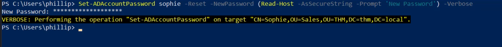
Since we wouldn't want Sophie to keep on using a password we know, we can also force a password reset at the next logon with the following command:
Powershell Force Password Reset at Next Logon in AD:
Set-ADUser -ChangePasswordAtLogon $true -Identity sophie -Verbose
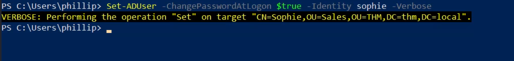
Managing Computers in AD:
By default, all the machines that join a domain (except for the DCs) will be put in the container called "Computers". If we check our DC, we will see that some devices are already there:
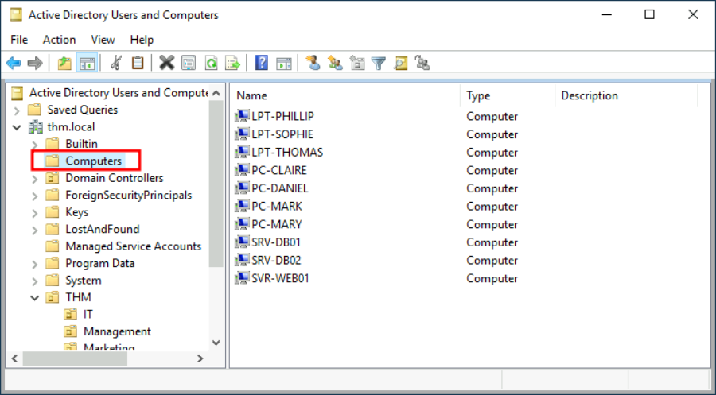
We can see some servers (SRV/SVR), some laptops (LPT) and some PCs (PC) corresponding to the users in our network. Having all of our devices there is not the best idea since it's very likely that you want different policies for your servers and the machines that regular users use on a daily basis.
While there is no golden rule on how to organise your machines, an excellent starting point is segregating devices according to their use. In general, you'd expect to see devices divided into at least the three following categories:
1. Workstations
Workstations are one of the most common devices within an Active Directory domain. Each user in the domain will likely be logging into a workstation. This is the device they will use to do their work or normal browsing activities. These devices should never have a privileged user signed into them.
2. Servers
Servers are the second most common device within an Active Directory domain. Servers are generally used to provide services to users or other servers.
3. Domain Controllers
Domain Controllers are the third most common device within an Active Directory domain. Domain Controllers allow you to manage the Active Directory Domain. These devices are often deemed the most sensitive devices within the network as they contain hashed passwords for all user accounts within the environment.
Group Policies:
So far, we have organised users and computers in OUs just for the sake of it, but the main idea behind this is to be able to deploy different policies for each OU individually. That way, we can push different configurations and security baselines to users depending on their department.
Windows manages such policies through Group Policy Objects (GPO). GPOs are simply a collection of settings that can be applied to OUs. GPOs can contain policies aimed at either users or computers, allowing you to set a baseline on specific machines and identities.
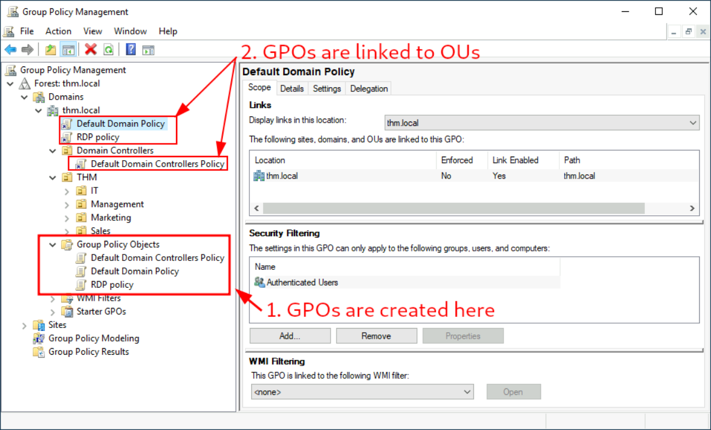
We can see in the image above that 3 GPOs have been created. From those, the Default Domain Policy and RDP Policy are linked to the thm.local domain as a whole, and the Default Domain Controllers Policy is linked to the Domain Controllers OU only. Something important to have in mind is that any GPO will apply to the linked OU and any sub-OUs under it. For example, the Sales OU will still be affected by the Default Domain Policy.
Example:
Let's examine the Default Domain Policy to see what's inside a GPO. The first tab you'll see when selecting a GPO shows its scope, which is where the GPO is linked in the AD. For the current policy, we can see that it has only been linked to the thm.local domain:
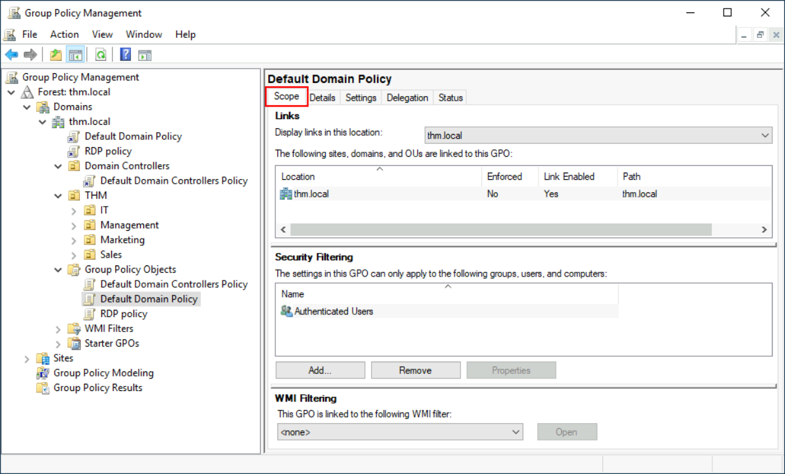
As you can see, you can also apply Security Filtering to GPOs so that they are only applied to specific users/computers under an OU. By default, they will apply to the Authenticated Users group, which includes all users/PCs.
The Settings tab includes the actual contents of the GPO and lets us know what specific configurations it applies. As stated before, each GPO has configurations that apply to computers only and configurations that apply to users only. In this case, the Default Domain Policy only contains Computer Configurations:
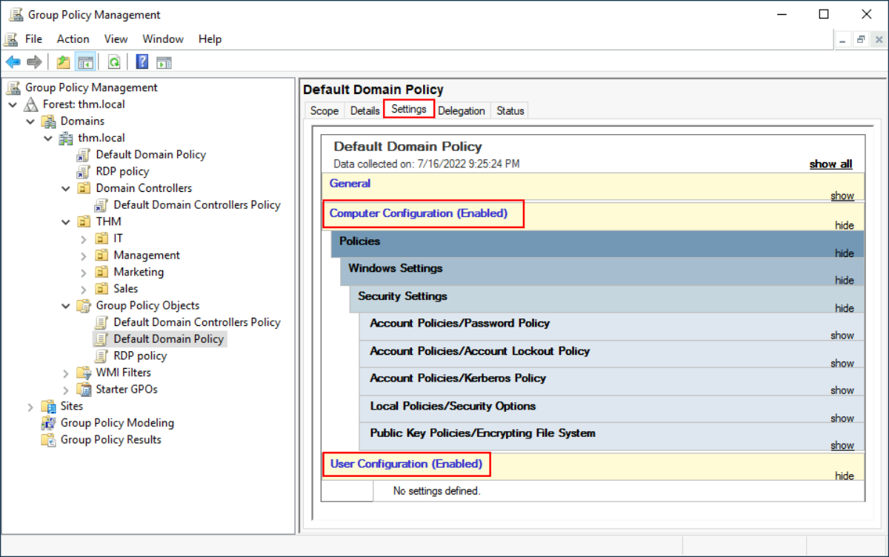
Since this GPO applies to the whole domain, any change to it would affect all computers. Let's change the minimum password length policy to require users to have at least 10 characters in their passwords. To do this, right-click the GPO and select Edit:
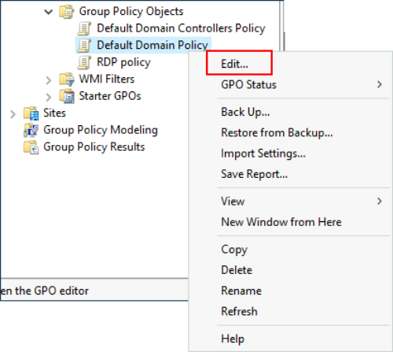
This will open a new window where we can navigate and edit all the available configurations. To change the minimum password length, go to Computer Configurations -> Policies -> Windows Setting -> Security Settings -> Account Policies -> Password Policy and change the required policy value:
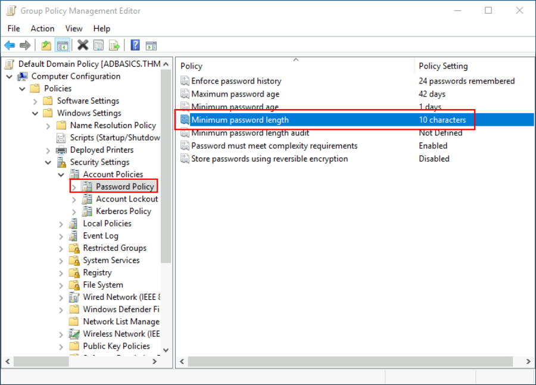
As you can see, plenty of policies can be established in a GPO. While explaining every single of them would be impossible in a single room, do feel free to explore a bit, as some of the policies are straightforward. If more information on any of the policies is needed, you can double-click them and read the Explain tab on each of them:
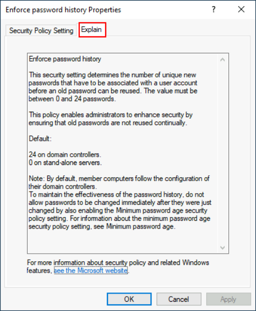
GPO distribution
GPOs are distributed to the network via a network share called SYSVOL, which is stored in the DC. All users in a domain should typically have access to this share over the network to sync their GPOs periodically. The SYSVOL share points by default to the C:\Windows\SYSVOL\sysvol\ directory on each of the DCs in our network.
Once a change has been made to any GPOs, it might take up to 2 hours for computers to catch up. If you want to force any particular computer to sync its GPOs immediately, you can always run the following command on the desired computer
gpupdate /force
Scenario:
Creating some GPOs for THM Inc.
As part of our new job, we have been tasked with implementing some GPOs to allow us to:
1. Block non-IT users from accessing the Control Panel.
2. Make workstations and servers lock their screen automatically after 5 minutes of user inactivity to avoid people leaving their sessions exposed.
Let's focus on each of those and define what policies we should enable in each GPO and where they should be linked.
1. Restrict Access to Control Panel
We want to restrict access to the Control Panel across all machines to only the users that are part of the IT department. Users of other departments shouldn't be able to change the system's preferences.
Let's create a new GPO called Restrict Control Panel Access and open it for editing. Since we want this GPO to apply to specific users, we will look under User Configuration for the following policy:
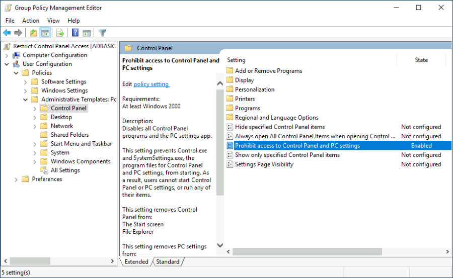
Once the GPO is configured, we will need to link it to all of the OUs corresponding to users who shouldn't have access to the Control Panel of their PCs. In this case, we will link the Marketing, Management and Sales OUs by dragging the GPO to each of them:
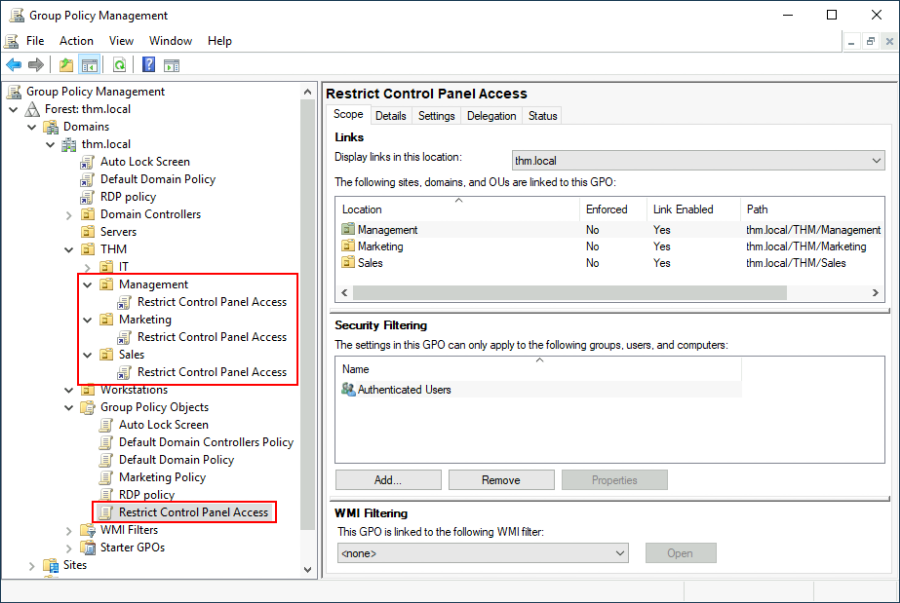
2. Auto Lock Screen GPO
Let's create a new GPO, call it Auto Lock Screen, and edit it. The policy to achieve what we want is located in the following route:
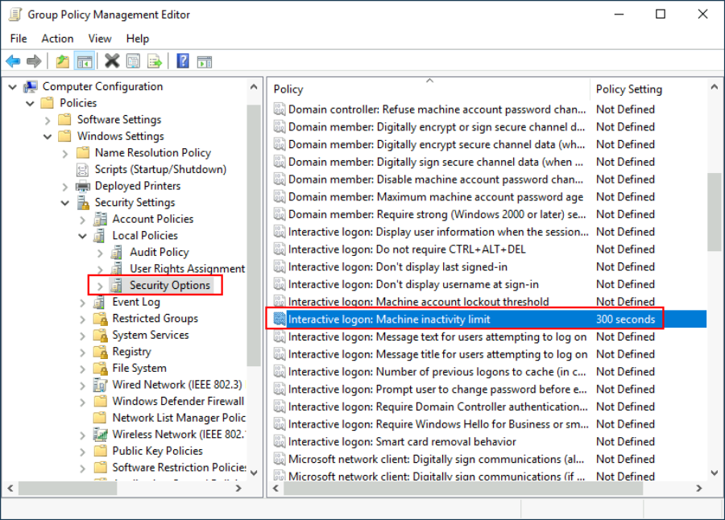
We will set the inactivity limit to 5 minutes so that computers get locked automatically if any user leaves their session open. After closing the GPO editor, we will link the GPO to the root domain by dragging the GPO to it:
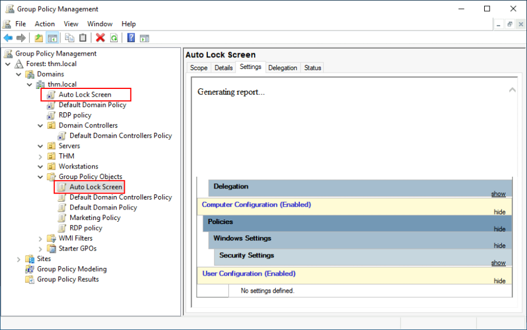
Authentication Methods:
When using Windows domains, all credentials are stored in the Domain Controllers. Whenever a user tries to authenticate to a service using domain credentials, the service will need to ask the Domain Controller to verify if they are correct. Two protocols can be used for network authentication in windows domains:
▪ Kerberos: Used by any recent version of Windows. This is the default protocol in any recent domain.
▪ NetNTLM: Legacy authentication protocol kept for compatibility purposes.
While NetNTLM should be considered obsolete, most networks will have both protocols enabled. Let's take a deeper look at how each of these protocols works.
Kerberos Authentication
Kerberos authentication is the default authentication protocol for any recent version of Windows. Users who log into a service using Kerberos will be assigned tickets. Think of tickets as proof of a previous authentication. Users with tickets can present them to a service to demonstrate they have already authenticated into the network before and are therefore enabled to use it.
When Kerberos is used for authentication, the following process happens:
1. The user sends their username and a timestamp encrypted using a key derived from their password to the Key Distribution Center (KDC), a service usually installed on the Domain Controller in charge of creating Kerberos tickets on the network.
The KDC will create and send back a Ticket Granting Ticket (TGT), which will allow the user to request additional tickets to access specific services. The need for a ticket to get more tickets may sound a bit weird, but it allows users to request service tickets without passing their credentials every time they want to connect to a service. Along with the TGT, a Session Key is given to the user, which they will need to generate the following requests.
Notice the TGT is encrypted using the krbtgt account's password hash, and therefore the user can't access its contents. It is essential to know that the encrypted TGT includes a copy of the Session Key as part of its contents, and the KDC has no need to store the Session Key as it can recover a copy by decrypting the TGT if needed.
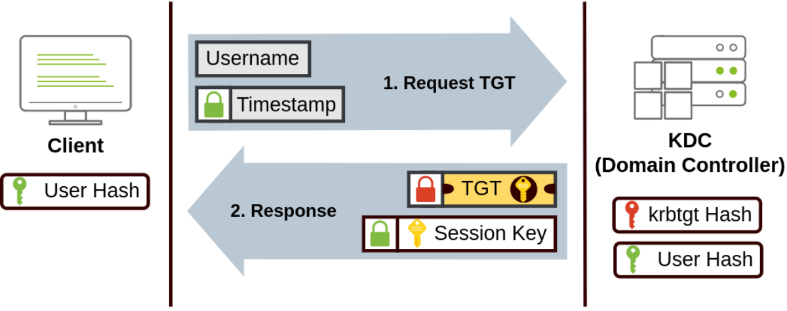
2. When a user wants to connect to a service on the network like a share, website or database, they will use their TGT to ask the KDC for a Ticket Granting Service (TGS). TGS are tickets that allow connection only to the specific service they were created for. To request a TGS, the user will send their username and a timestamp encrypted using the Session Key, along with the TGT and a Service Principal Name (SPN), which indicates the service and server name we intend to access.
As a result, the KDC will send us a TGS along with a Service Session Key, which we will need to authenticate to the service we want to access. The TGS is encrypted using a key derived from theĀ Service Owner Hash. The Service Owner is the user or machine account that the service runs under. The TGS contains a copy of the Service Session Key on its encrypted contents so that the Service Owner can access it by decrypting the TGS.
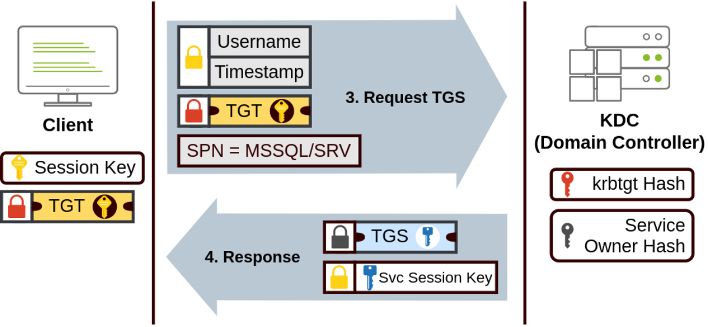
3. The TGS can then be sent to the desired service to authenticate and establish a connection. The service will use its configured account's password hash to decrypt the TGS and validate the Service Session Key.
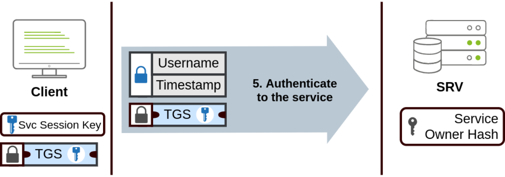
NetNTLM Authentication
NetNTLM works using a challenge-response mechanism. The entire process is as follows:
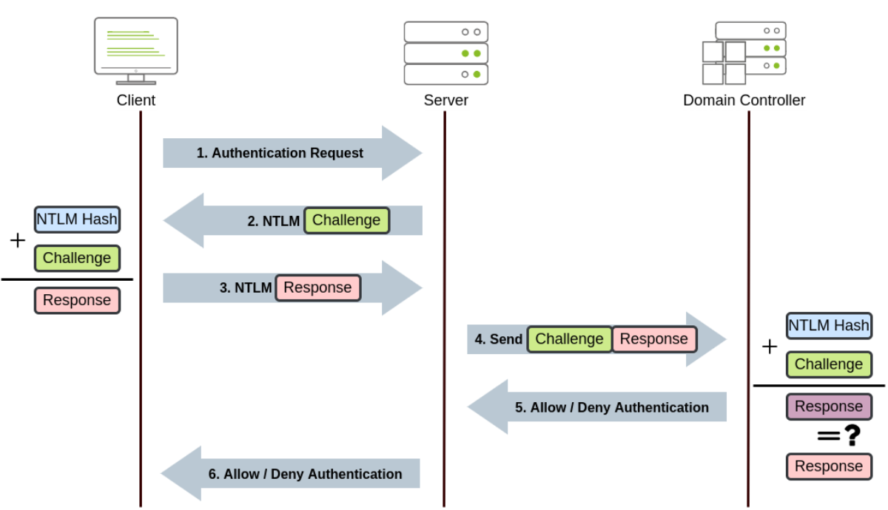
Procedure:
1. The client sends an authentication request to the server they want to access.
2. The server generates a random number and sends it as a challenge to the client.
3. The client combines their NTLM password hash with the challenge (and other known data) to generate a response to the challenge and sends it back to the server for verification.
4. The server forwards the challenge and the response to the Domain Controller for verification.
5. The domain controller uses the challenge to recalculate the response and compares it to the original response sent by the client. If they both match, the client is authenticated; otherwise, access is denied. The authentication result is sent back to the server.
6. The server forwards the authentication result to the client.
Note that the user's password (or hash) is never transmitted through the network for security.
Note:
The described process applies when using a domain account. If a local account is used, the server can verify the response to the challenge itself without requiring interaction with the domain controller since it has the password hash stored locally on its SAM.
Trees, Forests & Trust:
So far, we have discussed how to manage a single domain, the role of a Domain Controller and how it joins computers, servers and users.
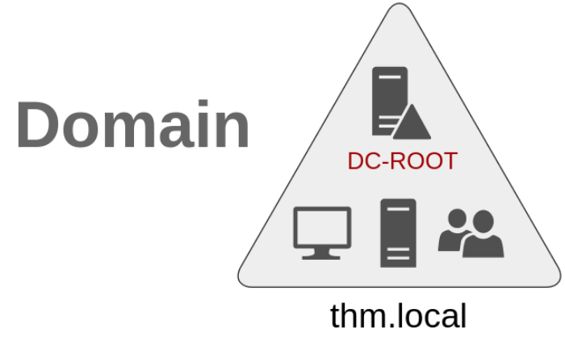
As companies grow, so do their networks. Having a single domain for a company is good enough to start, but in time some additional needs might push you into having more than one.
Trees
Imagine, for example, that suddenly your company expands to a new country. The new country has different laws and regulations that require you to update your GPOs to comply. In addition, you now have IT people in both countries, and each IT team needs to manage the resources that correspond to each country without interfering with the other team. While you could create a complex OU structure and use delegations to achieve this, having a huge AD structure might be hard to manage and prone to human errors.
Luckily for us, Active Directory supports integrating multiple domains so that you can partition your network into units that can be managed independently. If you have two domains that share the same namespace (thm.local in our example), those domains can be joined into a Tree.
If our thm.local domain was split into two subdomains for UK and US branches, you could build a tree with a root domain of thm.local and two subdomains called uk.thm.local and us.thm.local, each with its AD, computers and users:
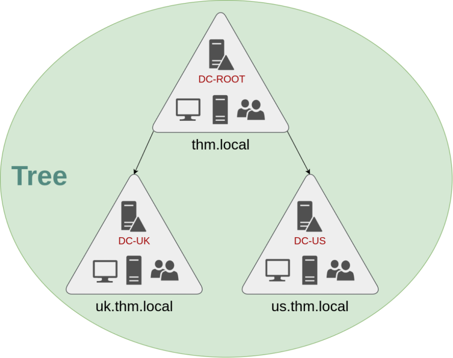
This partitioned structure gives us better control over who can access what in the domain. The IT people from the UK will have their own DC that manages the UK resources only. For example, a UK user would not be able to manage US users. In that way, the Domain Administrators of each branch will have complete control over their respective DCs, but not other branches' DCs. Policies can also be configured independently for each domain in the tree.
A new security group needs to be introduced when talking about trees and forests. The “Enterprise Admins” group will grant a user administrative privileges over all of an enterprise's domains. Each domain would still have its Domain Admins with administrator privileges over their single domains and the Enterprise Admins who can control everything in the enterprise.
Forests
The domains you manage can also be configured in different namespaces. Suppose your company continues growing and eventually acquires another company called MHT Inc. When both companies merge, you will probably have different domain trees for each company, each managed by its own IT department. The union of several trees with different namespaces into the same network is known as a forest.
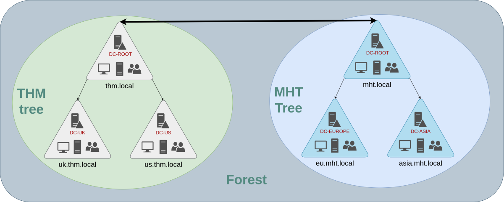
Trust Relationships
Having multiple domains organised in trees and forest allows you to have a nice compartmentalised network in terms of management and resources. But at a certain point, a user at THM UK might need to access a shared file in one of MHT ASIA servers. For this to happen, domains arranged in trees and forests are joined together by trust relationships.
In simple terms, having a trust relationship between domains allows you to authorise a user from domain: THM UK to access resources from domain: MHT EU.
The simplest trust relationship that can be established is a one-way trust relationship. In a one-way trust, if Domain AAA trusts Domain BBB, this means that a user on BBB can be authorised to access resources on AAA:
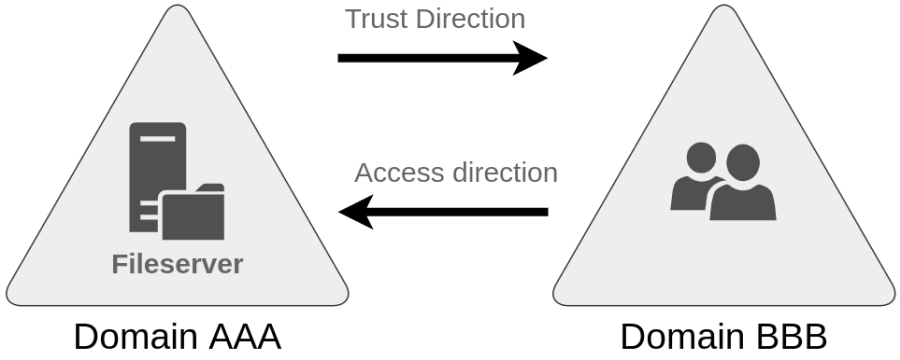
Note: The direction of the one-way trust relationship is contrary to that of the access direction.
Two-way trust relationships can also be made to allow both domains to mutually authorise users from the other. By default, joining several domains under a tree or a forest will form a two-way trust relationship.
It is important to note that having a trust relationship between domains doesn't automatically grant access to all resources on other domains. Once a trust relationship is established, you have the chance to authorise users across different domains, but it's up to you what is actually authorised or not.